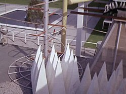

|
Deneva
|
|
|
|  |
 |
| Nome del sistema |
Beta Darius |
| Posizione nel sistema |
4 |
| Numero di satelliti |
3 |
| Classe |
M |
| Atmosfera |
Terrestre |
| Clima medio |
Temperato caldo |
Deneva è uno dei maggiori centri commerciali ed industriali della
Federazione. Fondata dai Centauriani, la colonia di Deneva è servita come centro
di rifornimento e riparazione per le navi durante la Guerra Romulana. Deneva è
diventato il simbolo della filosofia della Federazione, un monumento
all'evoluzione culturale e tecnologica scaturita dalla cooperazione di razze
diverse. La popolazione denevana è stata decimata nel 2267 da centinaia di
neuroparassiti, distrutti dall'Enterprise;
prima dell'infezione il pianeta ospitava quasi un milione di abitanti, 100.000
dei quali concentrati nella capitale.
La maggior parte dei dati è tratta da
The Federation
della FASA.